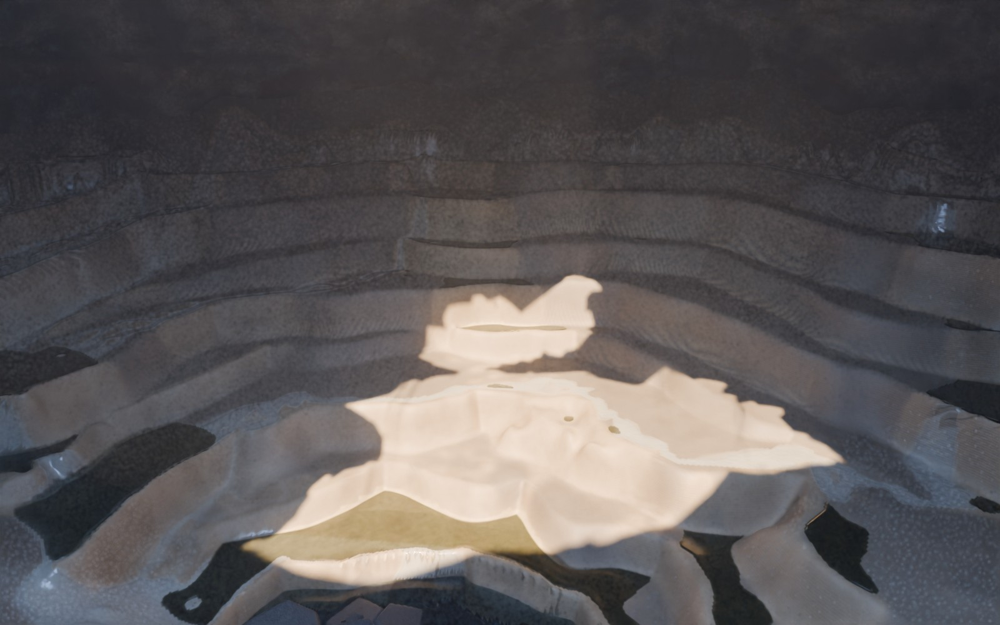
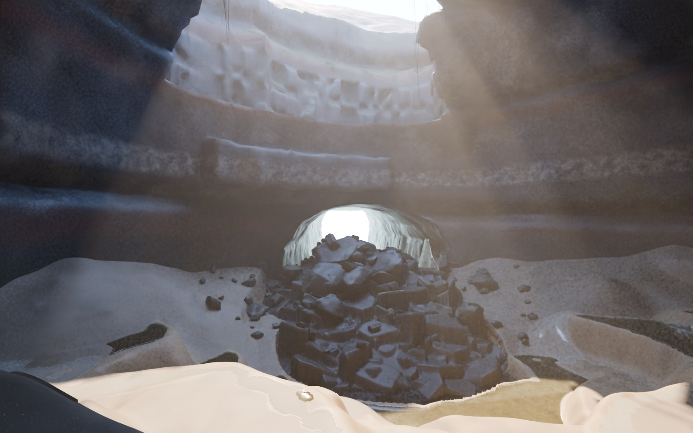
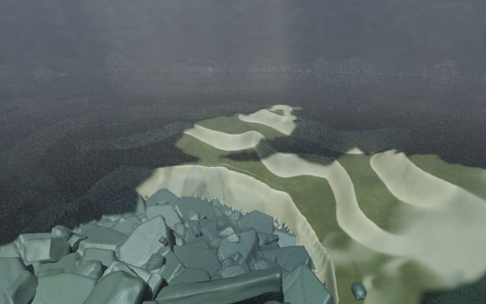
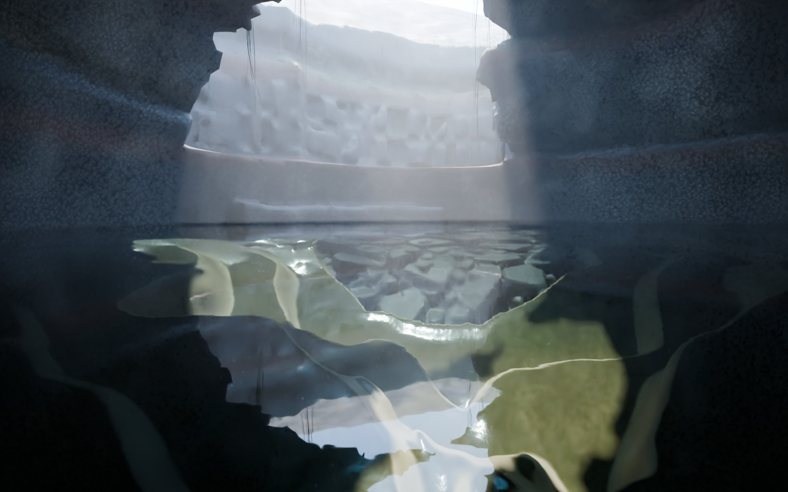
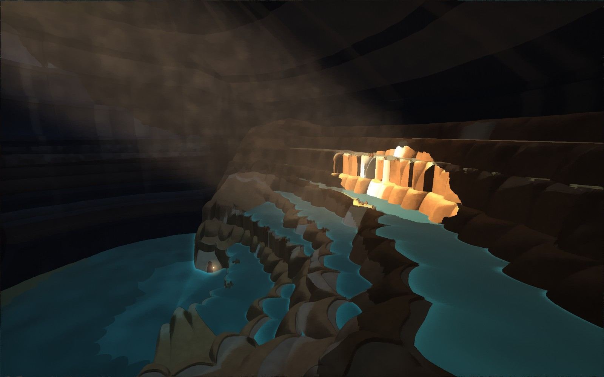
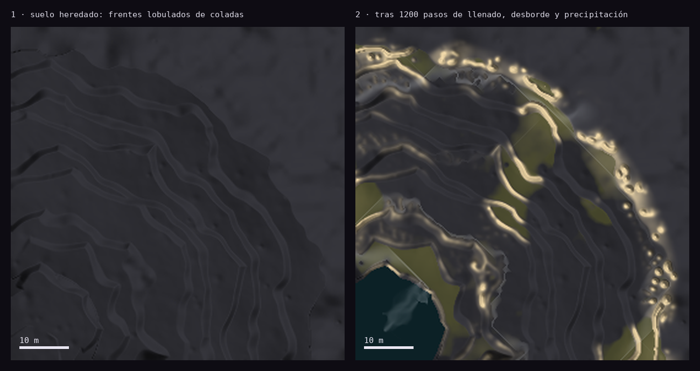

<title>Umbral · Cala Interior en Blender</title>
<link rel="preconnect" href="https://fonts.googleapis.com">
<link rel="stylesheet" href="https://fonts.googleapis.com/css2?family=Space+Grotesk:wght@400;500;600&family=JetBrains+Mono:wght@400;500&display=swap">
<style>
/* Prueba de producción: las cuatro imágenes mandan; el texto evalúa al margen. Tema oscuro único, el de gevorah. */
:root{
  --night:#0e0c13; --ink:#15131d; --rule:#2a2738;
  --fg:#e9e6f2; --muted:#a3a7c2; --faint:#6f7290;
  --tide:#79c9b8; --warm:#efb68c; --violet:#9aa6d8; --ok:#79c9b8; --mid:#efb68c; --weak:#e58f9c;
  --display:'Space Grotesk',ui-sans-serif,system-ui,sans-serif;
  --mono:'JetBrains Mono',ui-monospace,SFMono-Regular,Menlo,monospace;
  color-scheme:dark;
}
*{box-sizing:border-box}
body{background:var(--night);color:var(--fg);font:400 16px/1.6 var(--display);margin:0}
.wrap{max-width:1280px;margin:0 auto;padding-inline:clamp(16px,4vw,48px);padding-block:40px 96px;display:grid;gap:84px}
.eyebrow{font:500 12px/1 var(--mono);letter-spacing:.22em;text-transform:uppercase;color:var(--violet)}
h1{font:600 clamp(38px,6.4vw,78px)/.98 var(--display);letter-spacing:-.02em;margin:14px 0 0;text-wrap:balance}
h2{font:600 clamp(25px,3.2vw,36px)/1.12 var(--display);margin:8px 0 0;letter-spacing:-.01em;text-wrap:balance}
h3{font:600 17px/1.3 var(--display);margin:0}
p{margin:0;color:var(--muted);max-width:68ch}
p strong{color:var(--fg);font-weight:500}
figure{margin:0}
img{display:block;max-width:100%;height:auto;border-radius:3px}
figcaption{font:400 12.5px/1.5 var(--mono);color:var(--faint);margin-top:10px;letter-spacing:.02em}
.head{display:grid;gap:22px}
.lede{font-size:clamp(17px,1.6vw,20px);line-height:1.55;color:var(--muted);max-width:64ch}
.status{display:inline-flex;gap:10px;align-items:center;font:500 12px var(--mono);color:var(--warm);letter-spacing:.08em;text-transform:uppercase}
.status::before{content:"";width:8px;height:8px;border-radius:50%;background:var(--warm)}
.sec{display:grid;gap:26px}
.sec-head{display:grid;gap:6px;border-top:1px solid var(--rule);padding-top:22px}
.grid2{display:grid;grid-template-columns:repeat(2,minmax(0,1fr));gap:18px 20px}
.colhead{font:500 12px var(--mono);letter-spacing:.14em;text-transform:uppercase;color:var(--muted);padding-bottom:4px}
.rowlab{grid-column:1/-1;display:flex;gap:16px;align-items:baseline;border-top:1px solid var(--rule);padding-top:14px;margin-top:6px}
.rowlab .t{font:600 15px var(--display);color:var(--fg)}
.rowlab .d{font:400 13px var(--mono);color:var(--faint)}
.cols{display:grid;grid-template-columns:repeat(auto-fit,minmax(min(100%,270px),1fr));gap:26px 36px}
.cols > div{display:grid;gap:8px;align-content:start}
.side{display:grid;grid-template-columns:minmax(0,1.6fr) minmax(0,1fr);gap:34px;align-items:start}
.notes{display:grid;gap:18px;align-content:start}
.notes > div{display:grid;gap:6px}
.crit{display:grid;border-top:1px solid var(--rule)}
.row{display:grid;grid-template-columns:minmax(150px,240px) 96px minmax(0,1fr);gap:24px;padding:16px 0;border-bottom:1px solid var(--rule);align-items:baseline}
.row p{max-width:none}
.v{font:500 11px var(--mono);letter-spacing:.12em;text-transform:uppercase}
.v.ok{color:var(--ok)} .v.mid{color:var(--mid)} .v.weak{color:var(--weak)}
ul.plain{margin:0;padding:0;list-style:none;display:grid;gap:10px}
ul.plain li{color:var(--muted);padding-left:18px;position:relative;max-width:72ch}
ul.plain li::before{content:"";position:absolute;left:0;top:.62em;width:8px;height:2px;background:var(--faint)}
.refs a{color:var(--violet);text-underline-offset:3px}
.compare{display:grid;grid-template-columns:repeat(2,minmax(0,1fr));gap:18px}
@media (max-width:820px){ .grid2,.compare,.side{grid-template-columns:minmax(0,1fr)} .row{grid-template-columns:minmax(0,1fr) auto;gap:6px 16px} .row p{grid-column:1/-1} }
</style>

<main class="wrap">
  <header class="head">
    <span class="eyebrow">Gevorah · Small Worlds · Umbral · Prueba de producción 1</span>
    <h1>La Cala Interior, en Blender</h1>
    <p class="lede">Un único espacio trabajado para medir cuánto puede subir la calidad ambiental antes de ampliar el alcance. Se conservan la planta, las cotas y las relaciones de la ronda 6: el tubo desde la Bóveda, la poza madre a nivel de bajamar, las gradas que suben hacia el manantial y el jameo sobre la entrada. Dos cámaras, dos mareas.</p>
    <span class="status">Para evaluación · no aprobado</span>
  </header>

  <section class="sec" id="renders">
    <div class="sec-head"><span class="eyebrow">Entregable</span><h2>Dos cámaras, dos estados</h2></div>
    <div class="grid2">
      <span class="colhead">Cámara A · la repisa de lava a la salida del tubo</span>
      <span class="colhead">Cámara B · desde las gradas medias, hacia el jameo y el tubo</span>
      <div class="rowlab"><span class="t">Bajamar, tarde</span><span class="d">mar a −24 m · sol a 50° desde el suroeste</span></div>
      <figure></figure>
      <figure></figure>
      <div class="rowlab"><span class="t">Pleamar, mediodía</span><span class="d">mar a 0 m · sol a 66° · la cámara B sube a ras de la laguna</span></div>
      <figure></figure>
      <figure></figure>
    </div>
    <p>La cámara A está en una repisa a +2 m, la marca de un antiguo nivel de lava en la pared del tubo. Queda fuera del agua en las dos mareas, así que el encuadre es idéntico. La cámara B mantiene posición y dirección; en pleamar sube hasta la superficie de la laguna, que es como se llega a nado.</p>
  </section>

  <section class="sec" id="antes">
    <div class="sec-head"><span class="eyebrow">Ronda 6 → prueba</span><h2>Mismo lugar, otra materia</h2></div>
    <div class="compare">
      <figure><figcaption>Ronda 6 · shader: terrazas concéntricas dibujadas, la luz la pone el turquesa.</figcaption></figure>
      <figure><figcaption>Prueba · Blender y Cycles: terrazas que nacen del flujo, la luz la pone el sol del jameo.</figcaption></figure>
    </div>
  </section>

  <section class="sec" id="encargo">
    <div class="sec-head"><span class="eyebrow">Los cinco puntos del encargo</span><h2>Cómo se trabajó cada uno</h2></div>
    <div class="cols">
      <div><h3>1 · Formaciones minerales</h3><p>Las gradas no se dibujan. El suelo heredado son frentes lobulados de coladas antiguas. Sobre él, una simulación hace que el agua del manantial llene pozas, desborde y precipite carbonato donde la lámina pasa un labio. Los labios crecen, represan agua y se desplazan ladera abajo. Resultado: pozas de 14 a 35 cm, labios hasta 3,6 m de travertino y ninguna fila igual a otra.</p></div>
      <div><h3>2 · Escala y silueta</h3><p>Cuatro escalas que se apoyan unas en otras:</p><ul class="plain"><li>la sala de derrumbe, con el techo en cicatrices de bloques;</li><li>el cono de derrumbe, con losas de hasta 5 m y columnas caídas;</li><li>la repisa de lava y los bancos del tubo;</li><li>los labios de las pozas, de centímetros.</li></ul></div>
      <div><h3>3 · Una abertura natural</h3><p>El jameo es un techo hundido siguiendo la diaclasa, con dos lóbulos de hundimiento como los varios jameos de Lanzarote. Atraviesa coladas cuyo núcleo se enfrió en columnas: el tragaluz está rodeado de prismas de basalto partidos a distintas alturas. Encima, una dolina con helechos; desde el borde cuelgan raíces que buscan el agua.</p></div>
      <div><h3>4 · Materiales diferenciados</h3><p>Cada material sale de un proceso:</p><ul class="plain"><li><strong>Basalto:</strong> casi negro y algo vidriado, con bandas de escoria oxidada a su cota, costras minerales donde gotea el techo, franja intermareal y velo de sal.</li><li><strong>Travertino:</strong> crema donde corre el agua y ocre donde envejece; las cortinas tienen láminas de crecimiento.</li><li><strong>Agua:</strong> el mar se apaga con la profundidad; las pozas apenas tiñen.</li><li><strong>Organismos:</strong> biopelícula ámbar y oliva en el fondo de las pozas, musgo, helechos y raíces.</li></ul><p>Las máscaras salen de la simulación (espesor, caudal, profundidad), no de ruido.</p></div>
      <div><h3>5 · Luz con personalidad</h3><p>Ninguna poza emite luz. Las direcciones del sol se eligieron trazando rayos por el tragaluz:</p><ul class="plain"><li><strong>Tarde:</strong> el haz cae sobre las gradas medias.</li><li><strong>Mediodía:</strong> entra en la laguna sobre las gradas sumergidas.</li></ul><p>La segunda luz es el cielo frío que baja por el mismo hueco. La tercera, la del mar al fondo del tubo. Una bruma tenue, del vapor del manantial y el salitre, hace visible el haz.</p></div>
    </div>
  </section>

  <section class="sec" id="proceso">
    <div class="sec-head"><span class="eyebrow">Proceso</span><h2>De las coladas a los gours</h2></div>
    <figure></figure>
    <div class="side">
      <div class="notes">
        <div><h3>Técnicas que se usaron</h3>
          <ul class="plain">
            <li>Una simulación localizada de los gours: llenado de depresiones (priority-flood), reparto del flujo entre vecinos más bajos y precipitación concentrada en los labios, siguiendo lo que se observa en el campo (Hammer et al.; Goldenfeld et al.).</li>
            <li>La roca, definida por procesos y no por ruido:
              <ul class="plain">
                <li>tubo de lava con anillos de nivel;</li>
                <li>techo que cae en bloques angulosos;</li>
                <li>jameo con disyunción columnar en las coladas gruesas;</li>
                <li>la misma columna estratigráfica que La Rompiente.</li>
              </ul>
            </li>
            <li>Un cono de derrumbe montado en Blender por capas: poliedros de fractura y prismas de basalto con bisel, subdivisión y desconchado. Cada pieza se apoya en las anteriores mediante rayos.</li>
            <li>Materiales de Cycles con máscaras salidas de la simulación; bruma volumétrica; vida instanciada (raíces como curvas y frondas de helecho).</li>
          </ul>
        </div>
      </div>
      <div class="notes">
        <div><h3>Referencias reales</h3>
          <ul class="plain refs">
            <li><a href="https://en.wikipedia.org/wiki/Jameos_del_Agua" target="_blank" rel="noopener">Jameos del Agua</a>: un tubo volcánico con el techo hundido y una laguna de agua de mar filtrada. Es el modelo de la Cala.</li>
            <li><a href="https://arxiv.org/pdf/physics/0601116" target="_blank" rel="noopener">La dinámica de las terrazas de travertino</a> y <a href="https://sseh.uchicago.edu/doc/Hammer_et_al_2010.pdf" target="_blank" rel="noopener">Hammer et al. 2010</a>: la precipitación se concentra en los bordes y los labios grandes alcanzan a los pequeños.</li>
            <li><a href="https://legacy.caves.org/pub/journal/PDF/V27/v27n4-Varnedoe.htm" target="_blank" rel="noopener">Varnedoe 1965</a>: gours de cueva y su relación con la aceleración del agua.</li>
          </ul>
        </div>
      </div>
    </div>
  </section>

  <section class="sec" id="critica">
    <div class="sec-head"><span class="eyebrow">Evaluación</span><h2>¿Cuánto mejora la calidad real?</h2></div>
    <div class="crit">
      <div class="row"><h3>Luz</h3><span class="v ok">Mejora clara</span><p>Es el salto más grande. El haz cálido sobre las gradas, el cielo frío del hueco y el rebote dentro de la sala dan una atmósfera que el shader no podía dar. En pleamar, la laguna que refleja el tragaluz es la imagen más nueva de la prueba.</p></div>
      <div class="row"><h3>Formaciones minerales</h3><span class="v ok">Mejora clara</span><p>Las terrazas ya no son anillos. Tienen la irregularidad de algo que creció: labios lobulados, pozas de tamaños distintos y filas que se funden. Falta lo que la simulación aún no hace: labios que vuelan sobre la cortina, coladas laterales y microgours nítidos en las caras.</p></div>
      <div class="row"><h3>Roca y abertura</h3><span class="v mid">Media</span><p>Las columnas del tragaluz y los bloques del derrumbe son convincentes. Las paredes lejanas aún se leen como bandas horizontales demasiado continuas, y el basalto de cerca necesita una pasada de escultura a mano.</p></div>
      <div class="row"><h3>Materiales</h3><span class="v mid">Media</span><p>Los cuatro materiales se distinguen y responden a la marea y al caudal. Pero son procedurales sin fotografía: el travertino del primer plano en B se lee plástico, el basalto lejano es un gris oscuro uniforme y, bajo el agua de pleamar, los bloques del derrumbe salen verdosos y demasiado claros.</p></div>
      <div class="row"><h3>Composición</h3><span class="v mid">Media</span><p>B tiene el mejor encuadre de las dos mareas: tragaluz, derrumbe y boca del tubo en un solo eje. A en bajamar lee bien el anfiteatro pero el techo ocupa demasiado. A en pleamar enseña las gradas bajo el agua, aunque el derrumbe del primer plano pesa más de lo que debería.</p></div>
      <div class="row"><h3>Defectos visibles</h3><span class="v weak">A corregir</span><p>Tres:</p><ul class="plain"><li>Algunas pozas tienen la orilla del agua dentada donde la malla del suelo es más gruesa que el labio.</li><li>La bruma vela un poco las imágenes de la cámara B.</li><li>Las raíces y los helechos apenas se ven a esta resolución.</li></ul></div>
    </div>
    <div class="side">
      <div class="notes">
        <div><h3>Conclusión</h3><p>Sí se puede subir mucho la calidad ambiental, y lo que más rinde es la luz y que las formas nazcan de procesos. Lo que falta ya no es concepto, sino oficio de producción:</p><ul class="plain"><li>una pasada de escultura manual sobre la roca cercana;</li><li>texturas fotográficas;</li><li>un segundo nivel de detalle en los labios de los gours.</li></ul></div>
        <div><h3>Siguiente paso propuesto</h3><p>Antes de ampliar el alcance:</p><ul class="plain"><li>abrir la escena en Blender con un artista y esculpir los tres o cuatro planos cercanos de cada cámara;</li><li>sustituir los materiales de roca por texturas escaneadas;</li><li>simular un segundo nivel de gours a 3 cm solo en las zonas que se ven de cerca.</li></ul></div>
      </div>
      <div class="notes">
        <div><h3>Límites de este entorno</h3><p>Todo se hizo en un contenedor sin GPU, con Blender 5.2 como módulo de Python y Cycles por CPU (unos 20 minutos por imagen). La red bloquea las bibliotecas de recursos con licencia libre (Poly Haven, ambientCG), así que no hay texturas escaneadas: todos los materiales son procedurales. Las escenas se reconstruyen con los scripts del repositorio.</p></div>
      </div>
    </div>
  </section>
</main>
